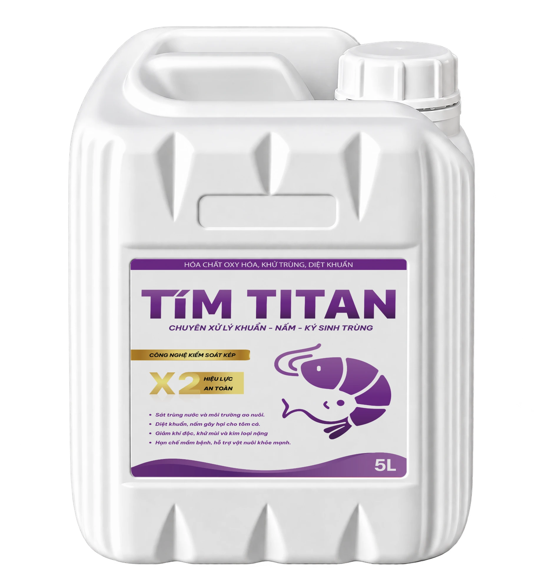

Sát Khuẩn Tím TiTan
Thành phần Glutaraldehyde 15% + BKC 10%. Dạng nước, pha loãng tạt đều xuống ao, liều tính theo m³ nước. Bà con mua lại nhiều lần trong một vụ.
- Quy cách
- Can 5 lít
- Giá trị đơn TB
- ~2.400.000đ / đơn (T11)
- Hạn dùng
- 2 năm chưa mở nắp · 6 tháng sau khi mở
- Bảo quản
- Khô ráo, thoáng mát, tránh nắng trực tiếp
- Đơn vị phân phối
- Thủy Sản Miền Nam
- Địa chỉ
- Song Hành, An Phú, Quận 2, TP. Hồ Chí Minh
- Hotline
- Giao hàng
- Cơ quan cấp
- Cục Thú y – Bộ NN&PTNT
- Số giấy phép
- 94/QLT-TS-SX-23
- Số đăng ký
- BD.TS1-20
- Tên trên giấy phép
- NOVAXIDE
- Hoạt chất
- Alkylbenzyldimethylammonium chloride (BKC), Glutaraldehyde
- Dạng bào chế
- Dung dịch dùng ngoài
- Đăng ký & sản xuất
- Công ty Liên doanh TNHH ANOVA (Bình Dương)
- Ngày cấp
- 14/4/2023
- Hiệu lực đến
- 14/4/2028
Dùng trước khi thả giống (ao lắng, ao nuôi), xử lý nước định kỳ, xử lý nước khi ao có mầm bệnh.
Lưới, vợt, thau, thúng, bể ương, bạt trước khi cấp nước.
Glutaraldehyde 15% + BKC 10%, có giấy phép lưu hành của Cục Thú y.
Pha loãng, tạt đều xuống ao. Liều tính sẵn theo m³ nước.
Xử lý định kỳ khoảng 66.000đ / 1.000m³ / lần theo giá lẻ. Xem mục Liều Dùng.
Sau khi xử lý có thể đánh men vi sinh Super Aqua để phục hồi hệ vi sinh có lợi.
| Mục đích | Liều | Ghi chú |
|---|---|---|
| Xử lý ao lắng, ao nuôi trước khi thả | 1 lít / 2.000m³ | Lúc cần dùng nhất |
| Xử lý nước ao nuôi định kỳ | 1 lít / 4.000m³ | 7–10 ngày / lần |
| Xử lý nước khi ao có mầm bệnh | 1 lít / 3.000m³ | Dùng 5–7 ngày |
| Sát trùng bể (nước đứng/chảy chậm) | 100ml / 50–70m³ | |
| Vệ sinh bể, dụng cụ | 6ml / m³ | Ngâm 10 giờ rồi rửa sạch |
- Dùng lúc trời nắng, oxy trong nước cao. Tăng cường oxy khi dùng.
- Chỉ đánh lúc tôm cá đang đói, không đánh lúc mới ăn no.
- Sau khi xử lý có thể đánh men vi sinh Super Aqua để phục hồi hệ vi sinh.
- Ao ốc: chỉ dùng 1/3 – 1/4 liều ao tôm cá. Pha thật loãng, tạt đều, tránh chỗ ốc tập trung. Sau 36–48h bắt buộc đánh lại men vi sinh + Yucca.
- Mục tiêu duy nhất: xin SĐT + khung giờ tiện nghe máy. 27% data mất đơn T11 là do không liên lạc được.
- Hỏi loài nuôi ngay câu đầu. Data tôm chốt 27%, data cá chỉ 8%. Data không ghi loài chỉ chốt 9%.
- Không gọi là "thuốc tím". Không cam kết kết quả ("dứt điểm", "diệt 100%").
- Gọi trong 15 phút khi data về. 90% đơn chốt trong 24h đầu, trung vị chỉ 30 phút.
- Cuộc gọi đầu quyết định: 78% đơn chốt ngay lần gọi 1. Chuẩn bị kỹ trước khi bấm gọi.
- Hỏi diện tích / m³ TRƯỚC khi báo giá. Note có chữ "giá cao" chỉ chốt 6%.
- Không gọi lần 3 cùng một kiểu: từ lần 3 tỷ lệ chốt rơi còn 4–5%. Lần 3 phải đổi kênh (Zalo) hoặc đổi ưu đãi.
- Chuyên xử lý khuẩn – nấm – ký sinh trùng trong nước ao nuôi
- Dạng nước, 1 lít pha với 50 lít nước rồi tạt đều. Có giấy phép Cục Thú y
- Combo 1: 1 can 1.325.000đ tặng men tiêu hóa · Combo 3: 3 can 3.600.000đ tặng 1 can 5L
- Bảo quản 2 năm · hư hỏng trong hạn đổi can mới · kiểm tra hàng trước khi thanh toán
Theo hướng dẫn phòng, chống bệnh tôm nước lợ của Cục Thủy sản và Kiểm ngư (2026). Dùng để mở lời đúng lúc: trước các tháng này, nhắc khách xử lý nước ao lắng trước thả và xử lý nước định kỳ.
Bật ✏️ Sửa thông tin để ghi thêm từ mới khách hay dùng.